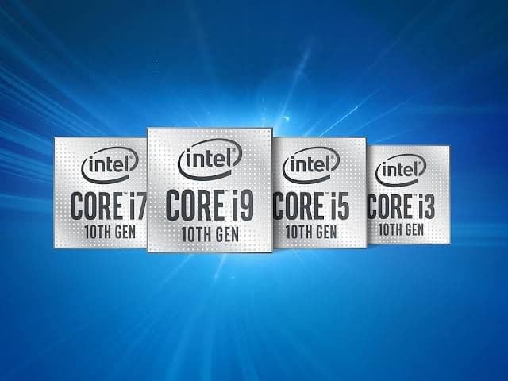

اسعار المعالجات في مصر
Intel-معالجات انتل

بروسيسور Intel Celeron G4900 LGA 1151 السعر : 750.00 جنيه مصري .
بروسيسور Intel Core i3-9100F Desktop Processor 4 Core Up to 4.2 GHz Without Processor Graphics LGA1151 300
Series 65W السعر : 1,350.00 جنيه مصري .
بروسيسور Intel Core i3-10100 Comet Lake Quad-Core 3.6 GHz LGA 1200 65W BX8070110100 Desktop Processor مع كرت
Intel UHD Graphics 630 السعر : 2,400.00 جنيه مصري .
بروسيسور Intel Core i5-9400F Coffee Lake 6-Core 2.9 GHz (4.1 GHz Turbo) LGA 1151 (300 Series) 65W
BX80684I59400F Desktop Processor Without Graphics السعر : 2,650.00 جنيه مصري .
بروسيسور Intel Core i5-10400F 6-Core 2.9 GHz LGA 1200 65W BX8070110400F Desktop Processor السعر : 2,750.00
جنيه مصري .
بروسيسور Intel Core i5-10400 Comet Lake 6-Core 2.9 GHz LGA 1200 65W BX8070110400 Desktop Processor مع كرت
Intel UHD Graphics 630 السعر : 3,000.00 جنيه مصري .
بروسيسور Intel Core i5-10600 6-Core 3.3 GHz LGA 1200 65W BX8070110600 Desktop Processor مع كرت Intel UHD
Graphics 630 السعر : 3,850.00 جنيه مصري .
بروسيسور Intel Core i5-9600K LGA 1151 السعر : 4,150.00 جنيه مصري .
بروسيسور Intel Core i5-10600K Comet Lake 6-Core 4.1 GHz LGA 1200 125W BX8070110600K Desktop Processor مع كرت
Intel UHD Graphics 630 السعر : 4,800.00 جنيه مصري .
بروسيسور Intel Core i7-8700K LGA 1151 السعر : 4,999.00 جنيه مصري .
بروسيسور Intel Core i7-10700 Comet Lake 8-Core 2.9 GHz LGA 1200 65W BX8070110700 Desktop Processor مع كرت
Intel UHD Graphics 630 السعر : 5,850.00 جنيه مصري .
بروسيسور Intel Core i7-7740X LGA 2066 السعر : 6,000.00 جنيه مصري .
بروسيسور Intel Core i7-9700K LGA 1151 السعر : 6,500.00 جنيه مصري .
بروسيسور Intel Core i7-10700K Comet Lake 8-Core 3.8 GHz LGA 1200 125W Desktop Processor w/ مع كرت Intel UHD
Graphics 630 السعر : 6,900.00 جنيه مصري .
بروسيسور Intel Core i9-10850K Comet Lake 10-Core 3.6 GHz LGA 1200 125W Desktop Processor مع كرت Intel UHD
Graphics 630 - BX8070110850K السعر : 7,700.00 جنيه مصري .
بروسيسور Intel Core i7-7800X LGA 2066 السعر : 8,500.00 جنيه مصري .
بروسيسور Intel Core i9-9900K LGA 1151 السعر : 8,500.00 جنيه مصري .
بروسيسور Intel Core I7-6950X LGA 2011-v3 السعر : 9,900.00 جنيه مصري .
بروسيسور Intel Core i9-10900KF 10-Core 3.7 GHz LGA 1200 125W BX8070110900KF Desktop Processor السعر :
10,500.00 جنيه مصري .
بروسيسور Intel Core i9-10900K 10-Core 3.7 GHz LGA 1200 125W BX8070110900K Desktop Processor مع كرت Intel UHD
Graphics 630 السعر : 10,999.00 جنيه مصري .
بروسيسور Intel Core i9-7920X Skylake X 12-Core 2.9 GHz LGA 2066 140W BX80673I97920X Desktop Processor السعر
: 19,500.00 جنيه مصري .
بروسيسور Intel Core i9-7940X Skylake X 14-Core 3.1 GHz LGA 2066 165W BX80673I97940X Desktop Processor السعر
: 20,500.00 جنيه مصري .
بروسيسور Intel Core i9-7960X Skylake X 16-Core 2.8 GHz LGA 2066 165W BX80673I97960X Desktop Processor السعر
: 26,200.00 جنيه مصري .
AMD معالجات
.jpg)
بروسيسور AMD A6-9500E السعر : 999.00 جنيه مصري .
بروسيسور AMD RYZEN 3 3200G 4-Core 3.6 GHz (4.0 GHz Max Boost) السعر : 1,750.00 جنيه مصري .
بروسيسور AMD Ryzen 5 1600AF 6-Core, 12-Thread Unlocked 65W Desktop Processor with Wraith Stealth Cooler
(YD1600AFBBAFBOX) السعر : 1,999.00 جنيه مصري .
بروسيسور AMD Ryzen 5 2400G Processor with Radeon RX Vega 11 Graphics - YD2400C5FBBOX السعر : 1,999.00 جنيه
مصري .
بروسيسور AMD Ryzen 3 3100 Quad-Core 3.9 GHz Socket AM4 65W 100-100000284BOX Desktop Processor السعر :
2,000.00 جنيه مصري .
بروسيسور AMD Ryzen 3 3300X Quad-Core 3.8 GHz Socket AM4 65W 100-100000159BOX Desktop Processor السعر :
2,350.00 جنيه مصري .
بروسيسور AMD RYZEN 5 2600 6-Core 3.4 GHz (3.9 GHz Max Boost) Socket AM4 65W YD2600BBAFBOX Desktop Processor
السعر : 2,450.00 جنيه مصري .
بروسيسور AMD RYZEN 5 3400G السعر : 2,650.00 جنيه مصري .
بروسيسور AMD RYZEN 5 3500X 6-Core 3.6 GHz (4.1 GHz Turbo) Socket AM4 65W 100-100000158CBX Desktop Processor
السعر : 2,750.00 جنيه مصري .
بروسيسور AMD RYZEN 5 2600X-6-Core 3.6 GHz (4.2 GHz Max Boost) Socket AM4 95W YD260XBCAFBOX Desktop Processor
السعر : 2,950.00 جنيه مصري .
بروسيسور AMD RYZEN 5 3600 السعر : 3,450.00 جنيه مصري .
بروسيسور AMD RYZEN Threadripper 1900X السعر : 3,950.00 جنيه مصري .
بروسيسور AMD RYZEN 5 3600X السعر : 4,000.00 جنيه مصري .
بروسيسور AMD Ryzen 5 3600XT 6-Core 3.8 GHz Socket AM4 95W 100-100000281BOX Desktop Processor السعر :
4,700.00 جنيه مصري .
بروسيسور AMD RYZEN 7 3700X السعر : 5,600.00 جنيه مصري .
بروسيسور AMD RYZEN 7 3800X السعر : 6,500.00 جنيه مصري .
بروسيسور AMD Ryzen 7 3800XT 8-Core 3.9 GHz Socket AM4 105W 100-100000279WOF Desktop Processor السعر :
6,600.00 جنيه مصري .
بروسيسور AMD RYZEN 9 3900X السعر : 7,850.00 جنيه مصري .
بروسيسور AMD Ryzen 7 5800X 8-Core 3.8 GHz Socket AM4 105W 100-100000063WOF Desktop Processor السعر :
8,500.00 جنيه مصري .
بروسيسور AMD Ryzen 9 3900XT 12-Core 3.8 GHz Socket AM4 105W 100-100000277WOF Desktop Processor السعر :
8,800.00 جنيه مصري .
بروسيسور AMD Ryzen 9 5900X 12-Core 3.7 GHz Socket AM4 105W 100-100000061WOF Desktop Processor السعر :
10,500.00 جنيه مصري .
بروسيسور AMD Ryzen 9 3950X 16-Core 3.5 GHz Socket AM4 105W 100-100000051WOF Desktop Processor السعر :
13,500.00 جنيه مصري .
بروسيسور AMD Ryzen 9 5950X 16-Core 3.4 GHz Socket AM4 105W 100-100000059WOF Desktop Processor السعر :
14,999.00 جنيه مصري .
بروسيسور AMD Ryzen Threadripper 3960X السعر : 25,500.00 جنيه مصري .
بروسيسور AMD Ryzen Threadripper 3970X 32-Core, 64-Thread Unlocked Desktop Processor, without Cooler السعر :
33,900.00 جنيه مصري .